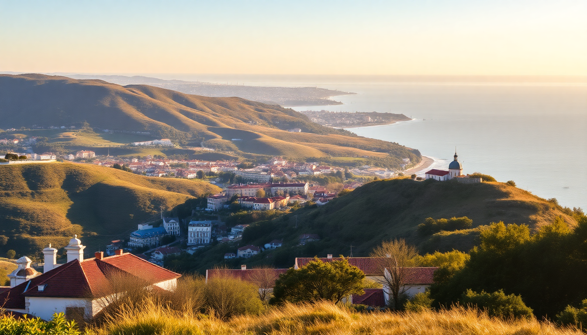

Three Perfect Day Trips from Lisbon: Sintra, Cascais, Évora

I spent two weeks based in Lisbon, and the best days were the ones I left the city. Each trip felt like a different country: the fairy-tale hills of Sintra, the seaside calm of Cascais, and the Roman bones of Évora. Here’s exactly how to do each one without wasting time or money.
How do you get to Sintra from Lisbon?
Take the train from Rossio Station. It’s a 40-minute ride on the Linha de Sintra, and trains run every 15-20 minutes. Buy a Viva Viagem card at the station (€0.50) and load a round-trip ticket for about €5 total. Avoid renting a car — the traffic up the hill to Pena Palace is a nightmare, and parking costs more than the train.
Once you arrive at Sintra station, walk five minutes to the 434 bus stop. That bus loops up to the main attractions. We bought the Hop-On Hop-Off ticket (€12) and it saved our legs.
What should you actually visit in Sintra?
Pena Palace is the famous one — and yes, it’s worth the ticket. The pastel towers and views over the forest are unique. But the line at the gate can hit an hour. Book your entry time online the night before. We did 9:30 AM and walked right in.
Skip the Moorish Castle if you’re short on time. It’s a ruined wall with more stairs. Instead, head to Quinta da Regaleira. The Initiation Well (that spiral staircase going underground) is the real highlight. The gardens are full of hidden tunnels and grottoes — we spent two hours exploring.
- Pena Palace: Book online, go early, expect crowds by 11 AM
- Quinta da Regaleira: The Initiation Well is the main draw; allow 90 minutes
- Sintra National Palace: In town, no bus needed, great tile work
- Casa Piriquita: Grab a travesseiro (egg-and-almond pastry) on your way out
For lunch, skip the tourist spots on the main square. We ate at Apeadeiro, a five-minute walk from the train station — grilled fish and a cold beer for €12.
Is Cascais just a beach town, or is there more?
Cascais is more than a beach. It’s a former fishing village turned seaside escape for Lisbon locals. We took the train from Cais do Sodré — 30 minutes, €2.25 each way. The station drops you two blocks from the water.
The real draw is the coastal walk from Cascais to Boca do Inferno. It’s a paved path along the cliffs, past rock pools and old fort ruins. Boca do Inferno itself is a sea cave that explodes when the waves hit. We watched for twenty minutes. Free, and better than any paid attraction in town.
- Boca do Inferno: Free, dramatic wave action at high tide
- Cascais Marina: Walk the pier, watch the yachts, grab a gelato
- Praia da Rainha: Tiny beach tucked behind the town center
- Museu Condes de Castro Guimarães: A mansion with a library and gardens — quiet, underrated
We skipped the big seafood restaurants on the waterfront — they’re overpriced. Instead, walked to Mar do Inferno, a no-frills place right by the cave. Grilled octopus and potatoes, €15.
How do you get to Évora, and is it worth the longer trip?
Évora is a two-hour drive or a 90-minute bus from Lisbon. We took the Rede Expressos bus from Sete Rios station — €20 round-trip, comfortable seats, free Wi-Fi. A day trip is doable, but it’s a long day. Leave by 8 AM, return by 6 PM.
Is it worth it? If you want Roman history, yes. The Temple of Évora (Templo de Diana) is right in the center, free to see, and better preserved than anything in Rome. The Capela dos Ossos (Chapel of Bones) is the other big draw — walls lined with human skulls and femurs. It’s macabre, not creepy. Entry is €6.
- Templo de Évora: Roman temple from the 1st century, free
- Capela dos Ossos: Chapel of Bones inside Igreja de São Francisco
- Praça do Giraldo: Main square, good for lunch and people-watching
- Água Prata Aqueduct: Walk the arches on the edge of town
Don’t leave without trying the local wine. We stopped at Taberna Típica Quarta-Feira for a glass of red and a plate of migas (bread and pork). Total was €11. The owner gave us free cheese.
What’s the best way to combine Sintra and Cascais in one day?
Don’t. Everyone tries this, and everyone ends up rushing. If you want to do both, spend the morning in Sintra (arrive by 9 AM, leave by 1 PM), then take the 403 bus from Sintra station to Cascais. It’s 45 minutes and costs €4. You’ll have the afternoon for the coastal walk and a late lunch.
But honestly, each town deserves its own day. We did Sintra on a Saturday and Cascais on a Tuesday. Both felt relaxed.
When is the best time to visit each town?
Sintra is miserable in August — the palace lines are two hours, and the bus is packed like a sardine can. Go in May, June, or September. We went in late May, and the gardens were blooming and the crowds manageable.
Cascais is fine year-round. Winter is quiet, and the coastal walk is still beautiful. Summer brings crowds but also beach weather. We went in May and swam at Praia da Rainha — water was cold but tolerable.
Évora gets hot. July and August push 40°C. The chapel and ruins have no shade. Go in spring or fall. We visited in early October and walked the town in a light jacket.
FAQ
Is it better to rent a car for these day trips? No. Trains and buses are cheaper and more reliable for Sintra and Cascais. Driving into Sintra means traffic jams and €15 parking. For Évora, a car saves 30 minutes each way, but the bus is fine. We took the bus and used the time to nap.
Can you do Évora as a half-day trip? Technically yes, but you’ll only see the temple and the chapel. The real charm of Évora is wandering the narrow streets and stopping for a long lunch. We regretted rushing back. Give it six hours minimum.
Are the tourist buses in Sintra worth it? The 434 bus is the only practical way up the hill. The hop-on-hop-off ticket is worth it if you plan to see Pena Palace, Quinta da Regaleira, and the Moorish Castle. If you only want Pena, just buy a single fare (€3) and walk down the hill.
Conclusion
- Take the train to Sintra from Rossio; book Pena Palace online the night before
- Cascais is best for a lazy afternoon — walk to Boca do Inferno and skip the expensive waterfront restaurants
- Évora deserves a full day; the Temple of Évora and Capela dos Ossos are the highlights
- Don’t combine Sintra and Cascais in one day — you’ll hate yourself
- Go in spring or fall to avoid crowds and heat